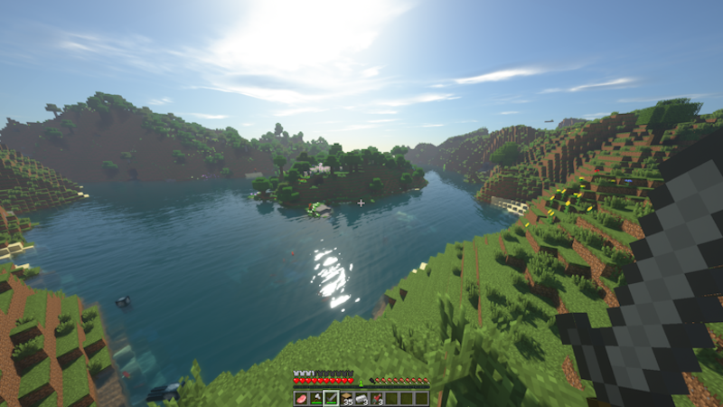

TailTownMC.net Server Closed Beta

Welcome to the closed Beta of the Minecraft server TailTownMC.net.
Play with like minded people, and find new friends!
As said this is all still a closed beta, so currently only selected people are able to play.
We are currently not looking for any Admins, Mods or Supporters that join our Team.
If you have questions or requests, contact us here:
EMail: TailTownTeam@gmail.com
Twitter: @TailTownMC

Thanks to all the supporters and followers of this Project.
-Flora